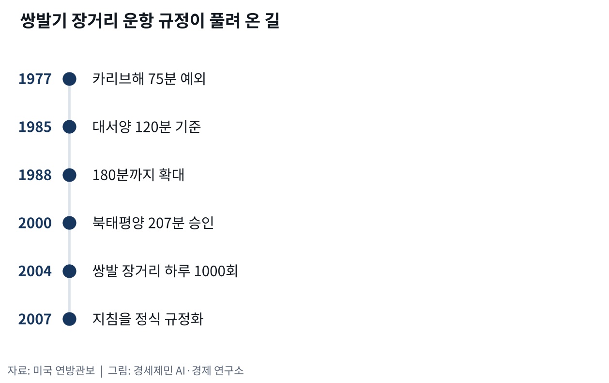
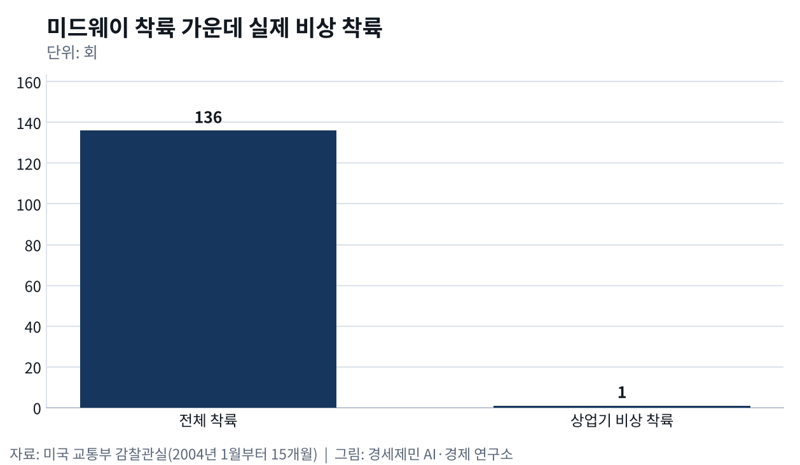

항공기는 왜 태평양을 직접 안 건널까
- 엔진 두 개짜리 여객기는 정해진 시간 안에 닿을 공항을 두고 날아야 한다
- 태평양 한가운데 작은 섬 활주로가 하늘길을 붙잡는 까닭
태평양을 건너는 여객기는 지도에 자를 대고 그은 선을 따라 날지 않는다. 엔진 두 개짜리 여객기는 엔진 하나가 멈추면 남은 엔진으로 가까운 공항까지 가야 한다. 그래서 규정은 쌍발기가 비상 착륙할 공항에서 몇 분 거리까지 떨어질 수 있는지를 정해 두었다. 태평양 하늘길은 바다가 아니라 섬이 그린다는 뜻이다(연방관보).
60분에서 180분까지
미국 연방항공청은 엔진이 두 개인 여객기가 쓸 만한 공항에서 60분 넘게 떨어져 날면 이를 장거리 운항으로 묶어 따로 관리한다. 이 제도를 이탑스(ETOPS, Extended Operations, 장거리 운항)라고 부른다. 옛 규정은 먼 바다 비행 위험을 엔진 개수로 가늠했다. 엔진이 셋이나 넷이면 하나가 멈춰도 버틸 여유가 있다고 봤기 때문이다(연방관보).
연방항공청은 1977년 카리브해에서 75분짜리 예외를 처음 허용하며 문을 조금씩 열었다. 1985년 6월에는 미국과 유럽을 잇는 대서양 노선을 겨냥해 120분 기준을 냈고, 1988년에는 이를 180분까지 늘렸다. 기체와 엔진 조합을 설계 단계에서 승인하고, 항공사 정비와 운항 관리와 승무원 교육을 따로 승인하는 두 단계 방식이었다(연방관보).

연방항공청은 2000년 3월 북태평양에만 쓰는 207분 운항 승인 기준을 따로 냈다. 180분 안에 있는 대체 공항이 날씨나 공항 사정으로 막힐 때만 쓰게 했다. 그사이 세계 쌍발기 장거리 운항은 1985년 한 달 1000회가 안 됐으나 2004년에는 하루 1000회를 넘었다. 연방항공청은 2007년 1월 이 지침들을 정식 규정으로 만들었다(연방관보).
로스앤젤레스와 도쿄 사이 섬 하나
그 규정 위에 서 있는 섬이 미드웨이다. 미국 교통부 감찰관실이 2005년 9월 낸 보고서를 보면 미드웨이는 로스앤젤레스와 도쿄 사이 한가운데쯤에 떠 있는 작은 섬 세 개다. 1942년 6월 태평양전쟁 흐름을 바꾼 해전이 벌어진 곳이다. 1996년 국방부에서 어류야생동물관리국으로 넘어가 야생동물 보호구역이 됐다(교통부 감찰관실).
보호구역 활주로가 상업 공항 인증을 받은 까닭은 비상 착륙 때문이다. 같은 보고서는 해마다 쌍발기가 3만8000편쯤 태평양을 건너고, 북태평양을 건너는 비행기는 미드웨이를 비상 착륙지로 삼는다고 적었다. 미드웨이가 없으면 이들 비행기는 항로를 바꿔야 하고 시간과 연료가 더 든다. 그 혜택을 보는 항공사는 당시 돈을 내지 않고 있었다(교통부 감찰관실).
실제 착륙은 드물어서 2004년 1월부터 15개월 동안 미드웨이 착륙은 136회였고 그 가운데 상업 항공기 비상 착륙은 한 번뿐이었다. 연방항공청 집계로 2003년부터 2021년까지 미드웨이에 민간기와 군용기가 비상 착륙한 일은 적어도 11차례다. 그래도 최근 추정으로는 여객기와 화물기와 군용기 수만 편이 해마다 비행계획에 이 섬을 대체 공항으로 적어 넣는다(교통부 감찰관실·연방관보).
누가 활주로 값을 치르나
활주로를 지키는 돈은 늘 다툼거리였다. 어류야생동물관리국이 섬을 넘겨받은 1996년부터 2002년까지 연방정부는 연료를 댄 것 말고는 비행장 운영에 돈을 대지 않았다. 그 사이 비행장과 시설은 민간 운영사와 보잉이 댄 보조금으로 버텼다. 어류야생동물관리국과 연방항공청 모두 비상 공항 유지를 자기 임무로 보지 않았다는 것이 감찰관실 진단이다(교통부 감찰관실).
2026년 7월 24일 연방항공청은 미드웨이를 두고 공개 의견을 구했다. 활주로가 5년 안에 심하게 망가질 것으로 보이고, 대규모 보수비는 해마다 배정되는 공항개선 예산을 훨씬 웃돈다고 적었다. 이 섬이 대체 공항에서 빠지면 어느 노선이 영향을 받는지, 연료가 얼마나 더 드는지, 승객과 화물은 무엇을 잃는지 물었다(연방관보).

의견 마감은 요청을 받아 9월 8일에서 9월 22일로 늦춰졌다. 북중부 태평양 항로에는 미드웨이 말고도 웨이크섬과 에어릭슨 기지, 마셜제도 국제공항이 대체 공항으로 쓰인다. 앞의 둘은 미국 전쟁부 소관이고 마셜제도 공항은 마셜제도 항만청이 운영한다. 미드웨이가 빠지면 북중부 태평양 대체 공항은 이 세 곳만 남는 셈이다(연방관보).
태평양을 건너는 발길도 이어진다. 여행신문 집계로 2025년 10월 미국 노선 여객은 47만3729명으로 한 달 전보다 6.2% 늘었다. 연방항공청은 미리 승인받은 여객기가 이탑스 범위 안에 있으면 북중부 태평양 비상 때 미드웨이로 회항할 수 있다고 적었다. 감찰관실은 미드웨이가 인증 공항이라서 이탑스가 요구하는 적합한 공항이 된다고 적었다(여행신문·연방관보·교통부 감찰관실).
연방항공청은 이탑스 제도 덕에 쌍발기가 남극 지역과 남태평양 일부, 겨울철 북극 일부를 빼면 지구 거의 모든 곳을 날 수 있게 됐다고 적었다. 다만 그 전제는 몇 시간 거리 안에 믿을 만한 활주로가 있다는 것이다. 태평양 한가운데 작은 섬 활주로를 누가 어떤 돈으로 지킬지, 연방항공청이 모은 의견으로 어떤 결론을 낼지가 앞으로 지켜볼 대목이다(연방관보·교통부 감찰관실).
※ 이 기사는 AI 프로그램 클로드를 활용해 작성했습니다.
이 기사는 인공지능을 활용해 작성했습니다. 사실관계는 저자가 확인했습니다.
참고문헌
공식 발표자료와 공공기록
- Federal Aviation Administration, "Extended Operations (ETOPS) of Multi-Engine Airplanes", Final rule, 『Federal Register』 72권 1808쪽, 2007년 1월 16일. https://www.federalregister.gov/citation/72-FR-1808
- Federal Aviation Administration, "Request for Comments on Midway Atoll Airport/Henderson Airfield (MDY)", 『Federal Register』 91권 46823쪽, 2026년 7월 24일. https://www.federalregister.gov/documents/2026/07/24/2026-14974/request-for-comments-on-midway-atoll-airporthenderson-airfield-mdy
- Federal Aviation Administration, "Request for Comments on Midway Atoll Airport/Henderson Airfield (MDY); Extension of Comment Period", 『Federal Register』 91권 56707쪽, 2026년 9월 3일. https://www.federalregister.gov/d/2026-18010
연구보고서와 논문
- U.S. Department of Transportation Office of Inspector General, "Review of Costs of the Airfield on Midway Island", Report Number FI-2005-079, 2005년 9월 30일. https://www.oig.dot.gov/sites/default/files/midway-Final.pdf
언론 보도
- 김다미, "[단독] 2025년 항공 여객 실적 분석② 엇갈린 수요 곡선…노선·공항·항공사별 양극화 뚜렷", 여행신문, 2026년 1월 26일. https://www.traveltimes.co.kr/news/articleView.html?idxno=415115